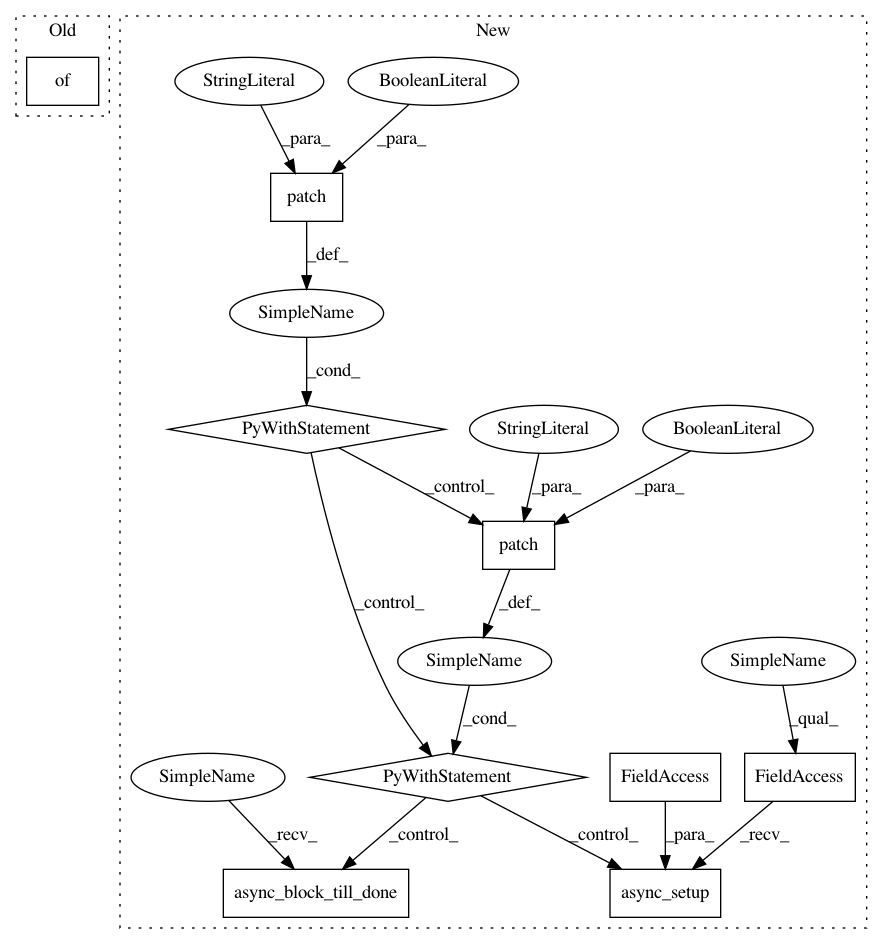

fb48fd7d10a18c322634aa9f0821f2619f7b4ca6,tests/components/screenlogic/test_config_flow.py,,test_option_flow_defaults,#Any#,214
Before Change
async def test_option_flow_defaults(hass):
Test config flow options.
entry = MockConfigEntry(domain=DOMAIN, data={}, options=None)
entry.add_to_hass(hass)
result = await hass.config_entries.options.async_init(entry.entry_id)
After Change
entry = MockConfigEntry(domain=DOMAIN)
entry.add_to_hass(hass)
with patch(
"homeassistant.components.screenlogic.async_setup", return_value=True
), patch(
"homeassistant.components.screenlogic.async_setup_entry",
return_value=True,
):
await hass.config_entries.async_setup(entry.entry_id)
await hass.async_block_till_done()
result = await hass.config_entries.options.async_init(entry.entry_id)
assert result["type"] == "form"
assert result["step_id"] == "init"
In pattern: SUPERPATTERN
Frequency: 3
Non-data size: 9
Instances
Project Name: home-assistant/home-assistant
Commit Name: fb48fd7d10a18c322634aa9f0821f2619f7b4ca6
Time: 2021-03-21
Author: 37058192+dieselrabbit@users.noreply.github.com
File Name: tests/components/screenlogic/test_config_flow.py
Class Name:
Method Name: test_option_flow_defaults
Project Name: home-assistant/home-assistant
Commit Name: fb48fd7d10a18c322634aa9f0821f2619f7b4ca6
Time: 2021-03-21
Author: 37058192+dieselrabbit@users.noreply.github.com
File Name: tests/components/screenlogic/test_config_flow.py
Class Name:
Method Name: test_option_flow
Project Name: home-assistant/home-assistant
Commit Name: fb48fd7d10a18c322634aa9f0821f2619f7b4ca6
Time: 2021-03-21
Author: 37058192+dieselrabbit@users.noreply.github.com
File Name: tests/components/screenlogic/test_config_flow.py
Class Name:
Method Name: test_option_flow_input_floor